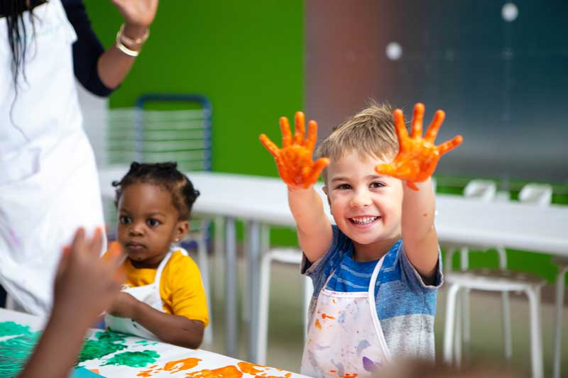
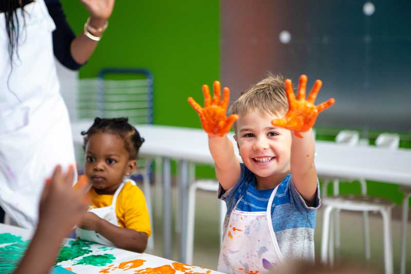

Creative Growth: What Children Learn Through Art
Art gives children powerful tools for personal and cognitive development. When kids create, they build fine motor skills, strengthen imagination, and improve problem-solving abilities. Art-making also supports emotional growth—it teaches patience, focus, and self-expression. Children gain confidence when they see their ideas come to life, and they learn to appreciate the value of effort, practice, and creativity. Through art, kids develop not only skills but also curiosity, discipline, and a sense of pride in their work.